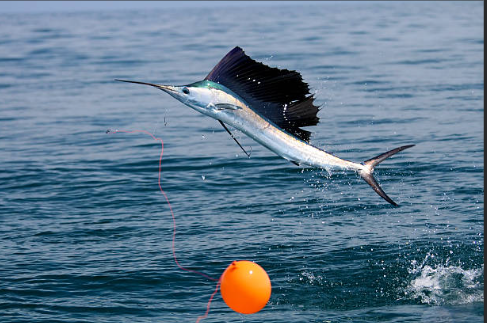
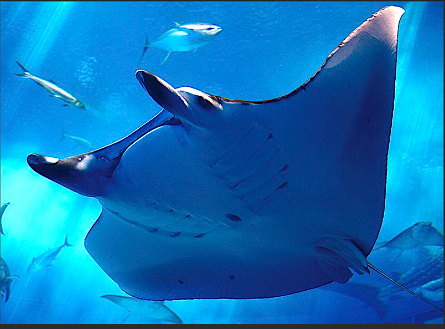
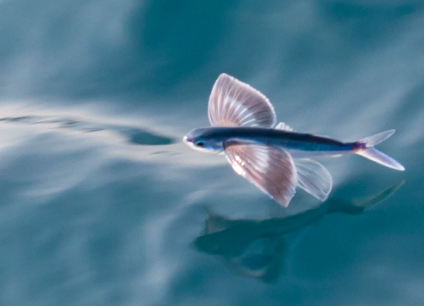
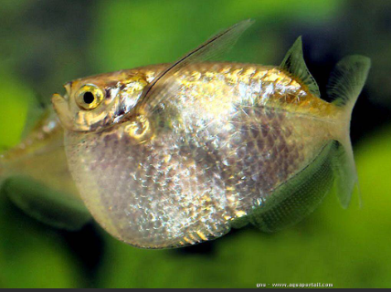

Certains poissons font de si grands bonds hors de l'eau qu'ils donnent l'impression de voler
Ce volier à gauche bondit hors de l'eau à plus de 100 km/h.Les sauts hors de l'eau de la raie à droite manta peuvent attendre 2 m
Face à un ennemi, ces poissons volants à gauche, se mettent à nager de plus en plus vite à la surface et décollent sur plusieurs mètres. Pour les meme raisons, ces poissons-hachettes à droite, volent aussi au-dessus de la surface de l'eau